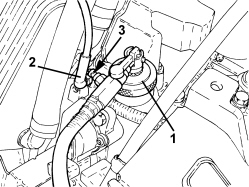

0010T60 ELECTROHYDRAULIC SELECTION GEARBOX CLUTCH HYDRAULIC SYSTEM - BLEED AIR
- Path
- Procedures > 00 MAINTENANCE > 0010 NEW VEHICLES AND MAINTENANCE > 0010T VEHICLE FLUIDS > 0010T60 ELECTROHYDRAULIC SELECTION GEARBOX CLUTCH HYDRAULIC SYSTEM - BLEED AIR
- Kind
- repair procedure (removal / refitting; the operation number is the code)
- Applies to
- engines: 2.2 JTS; all production periods
- Interactive page
- https://sloeber94.github.io/elrnDB-aBrrSpdr/en/#/946004285
Applies to: engines: 2.2 JTS; all production periods
- Place the gear lever in N.
Op. 5530B52 BATTERY SUPPORT/DRIP TRAY - R.R
- Connect the battery without placing it in the engine compartment.
- Use special pneumatic equipment for the bleeding procedure selecting the correct plug to be fitted to the clutch actuator reservoir.
1. Remove the clutch fluid reservoir cap and connect suitable equipment to the actual reservoir.
Component | Type | Description | Classification | Qty. | Validity |
|---|---|---|---|---|---|
Brake/clutch hydraulic circuit | Fluid [I] | TUTELA TOP 4 | FMVSS n° 116 DOT 4, ISO 4925 SAE J1704 - CUNA NC 956-01 | 0.038 | 2.2 JTS Selespeed |
2. Remove the protective plug and connect the bleed recovery device (pipe and reservoir) to the bleed cock on the clutch hydraulic/coaxial actuator three-way connector.
3. Open the bleed tap on the clutch hydraulic/coaxial three-way connector.
- Open the equipment fluid reservoir tap slowly.

Applies to: engines: 2.2 JTS; all production periods
- Wait for the air in the clutch release hydraulic system to come out completely and then close the tap on the equipment reservoir.
- Close the bleed valve on the clutch hydraulic/coaxial three-way connector and refit the protective cap in its seat.
Applies to: engines: 2.2 JTS; all production periods
Bleeding check
- Connect an Examiner and run the clutch bleeding procedure.
- Open the bleed tap on the clutch hydraulic/coaxial three-way connector.
- Open the equipment fluid reservoir tap slowly.
- Wait for the air in the clutch release hydraulic system to come out completely and then close the tap on the equipment reservoir.
- Close the bleed valve on the clutch hydraulic/coaxial three-way connector and refit the protective cap in its seat.
- Remove the clutch bleed equipment.
- Disconnect the Examiner.
Topics linked from this page (2)
Topics that link to this page (16)
- 0010K60 60,000KM SERVICE
- 0010M20 120,000KM SERVICE
- 0010M80 180,000KM SERVICE
- 1004B24 POWER UNIT WITH MANUAL GEARBOX WITH HYDRAULIC SELECTION - R.R.
- 1020D36 FLYWHEEL SIDE OIL SEAL - REPLACE FOR MANUAL GEARBOX WITH HYDRAULIC SELECTION VERSIONS
- 1024B11 ENGINE FLYWHEEL - R.R. FOR MANUAL GEARBOX WITH HYDRAULIC SELECTION VERSIONS
- 1810A28 CLUTCH - R.R. FOR MANUAL GEARBOX WITH HYDRAULIC SELECTION VERSIONS
- 2110A11 MANUAL GEARBOX WITH DIFFERENTIAL - R.R. FOR VERSIONS WITH HYDRAULIC SELECTION
- 2127C23 PIPE FROM MASTER CYLINDER TO THREE-WAY CONNECTOR FOR ELECTROHYDRAULIC SELECTION GEARBOX - R.R
- 2127C40 HYDRAULIC SPEED SELECTION HYDRAULIC ACTUATOR UNIT AND CLUTCH - R.R.
- 2127C45 CLUTCH OPERATING CYLINDER, OF ELECTROHYDRAULIC SELECTION - R.R .
- 2127C52 ODD AND EVEN GEAR ENGAGEMENT SOLENOIDS - R.R.
- 2127C54 GEAR SELECTION SOLENOIDS - R.R.
- 2127C56 CLUTCH CONTROL SOLENOID - R.R.
- 2127E40 HYDRAULIC SELECTION GEARBOX SPEED SELECTION POSITION SENSOR - R.R.
- 2127E50 HYDRAULIC SELECTION GEARBOX CIRCUIT PRESSURE SENSOR - R.R.